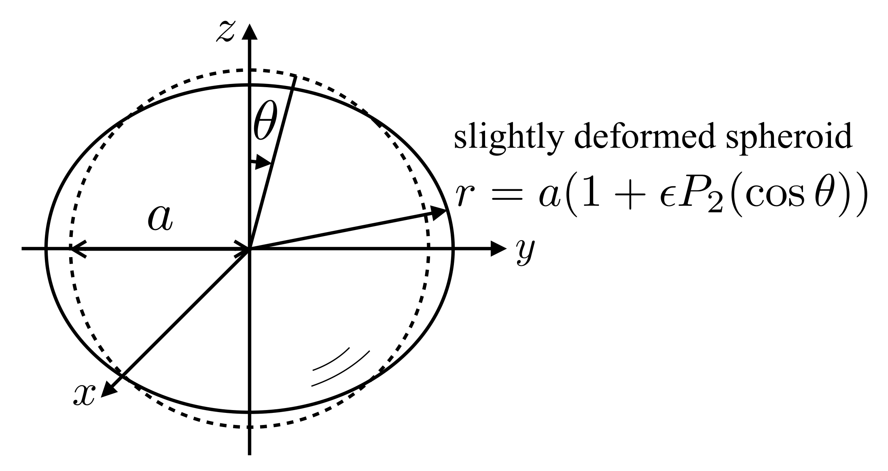
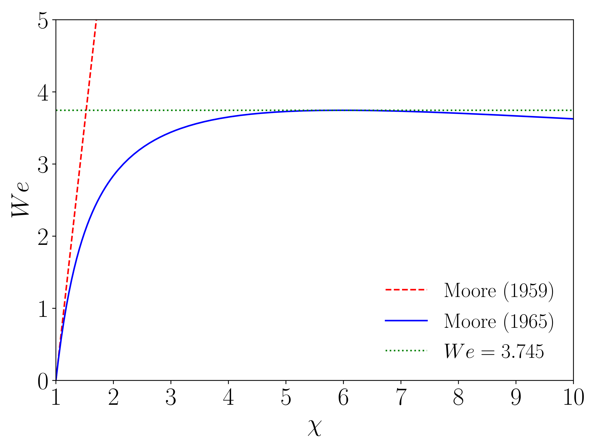

6.3. Shape deformation¶
Moore [Moo59] derived a bubble shape model for small perturbation from perfect sphere, that is the bubble shape is approximated as (Fig. 6.3)
where \(r\) and \(\theta\) are the spherical coordinates, \(a\) is the radius of sphere, \(\epsilon~(\ll 1)\) is a small perturbation, and \(P_{2} (\cos \theta)\) is the second Legendre polynomial defined by
\(P_{0}(x) = 1\), \(P_{1}(x) = x\), \(P_{2}(x) = (3x^{2}-1)/2\), \(P_{3}(x) = (35x^{4}-30x^{2}+3)/8\) \(\cdots\).
The Legendre polynomials are orthogonal within \([-1, 1]\), that is \(\int_{-1}^{1} P_{m}(x) P_{n} dx = 2\delta_{mn}/(2n+1)\).

Fig. 6.3 Slightly deformed bubble¶
The tangential velocity components in a potential flow about a sphere moving a constant speed \(u\) is given by (Appendix Potential flow about sphere)
Riding on the sphere, we observe
Therefore,
At the stagnation point (\(\theta = 0\)),
and for \(0 < \theta < \pi\),
We need to calculate an approximate curvature \(\kappa\) at \(\theta\). The surface equation is given by
The normal to the isosurface of \(f\) is (see Appendix Continuity and NS equations in polar coordinate systems for differential operators)
The unit normal is therefore
However, for the first order,
The curvature can be calculated as the divergence of the field of \(\mathbf{n}\), that is
Substituting \(r = a (1 + \epsilon P_{2}(\cos \theta))\) yields
Therefore,
Subtracting Eq. (6.41) from Eq. (6.49) yields
The Legendre polynomial can be written as
Hence,
Considering the balance between the terms depending on \(\sin^{2} \theta\), we find
Using the definition of the Weber number, \(We = 2 \rho u^{2} a / \sigma\), we have
The definition of \(We\) used here can be considered as the same as that with the sphere-volume-equivalent bubble diameter since the perturbation from spherical shape is small enough. The coordinates of the surface at \(\theta = 0\) and \(\pi/2\) are
The aspect ratio (the major axis / the minor axis) of the bubble is therefore given by
The bubble shape is hence oblate spheroid and the deformation increases linearly as the Weber number increases.
Moore [Moo65] attempted to exactly satisfy the boundary conditions at the stagnation point and at the bubble equator, which resulted in
The bubble shape models are compared in Fig. 6.4. The linearized model agrees with the more rigorous model when the bubble deformation is weak (small \(\chi\)), while the deviation becomes very large for \(We > 1\). The model of Moore [Moo65] shows a saturation of the Weber number, \(We = 3.745 \dots\), showing a limitation of the model assumption. In reality, larger Weber numbers are possible, but the bubble rise behavior changes from rectilinear to oscillating leading to a different \(We\)-\(\chi\) relationship. For deformed bubbles in oscillating motion Hayashi et al. [HHL+21] proposed the following empirical equation:
A similar correlation was derived by Puncochar et al. [PRS22] from a force balance in the bubble detachment from a nozzle tip.

Fig. 6.4 Moore’s bubble shape models¶
Various bubble shape correlations have been proposed so far. Most of them are extensions of Moore’s model or fitting of the following functional form to experimental data:
where \(\alpha\) and \(\beta\) are constants. Some examples are given in Table Constants in aspect ratio correlation.
Source |
\(\alpha\) |
\(\beta\) |
Data |
|---|---|---|---|
Wellek et al. [WAS66] |
0.163 |
0.757 |
drops in liquids |
Lee and Lee [LL20] |
0.21 |
0.58 |
deformed bubbles in water flow |
Okawa et al. [OTKM03] |
1.97 |
1.3 |
small bubbles in water |
Sugihara et al. [SSSW07] |
6.5 |
1.925 |
small bubbles in water |
Hessenkemper et al. [HZR+21] |
0.94 |
0.0875 |
deformed bubbles in water flow |
Neither \(We\) nor \(Eo\) accounts for the viscous effect on shape deformation. Tadaki and Maeda [TM61] proposed to use a combination of \(Re\) and \(M\) in correlating the bubble aspect ration, i.e.,
where \(Ta\) is the Tadaki number defined by
Fan and Tsuchiya [FT90] extended a correlation proposed by Vakrushev and Efremov (1970) as
where \(m = 3\), \(Ta_{1} = 1.0, 0.3\), \(Ta_{2} = 40, 20\), \(c_{1} = 0.81\), \(c_{2} = 0.20\), \(c_{3} = 2.0, 1.8\), and \(c_{4} = 0.80, 0.40\), and the former and latter values are for contaminated and clean bubbles, respectively. Aoyama et al. [AHHT16] proposed an alternative way to take into account the viscous effect; they used
to correlate \(\chi\) rather than \(Ta\):
Large bubbles cannot maintain an ellipsoidal shape and exhibit the so-called spherical cap shape. The shape and rise velocity of spherical cap bubble will be discussed in Large bubbles in liquid.